※本篇文章是由AI（Claude Haiku 4.5）制作，我再部分加笔更新而成😆
2025年1月去吃的😁😊 在读谷村古坚的隐藏名店「读谷山面」，享用了深受当地常客喜爱的一碗喔。📍
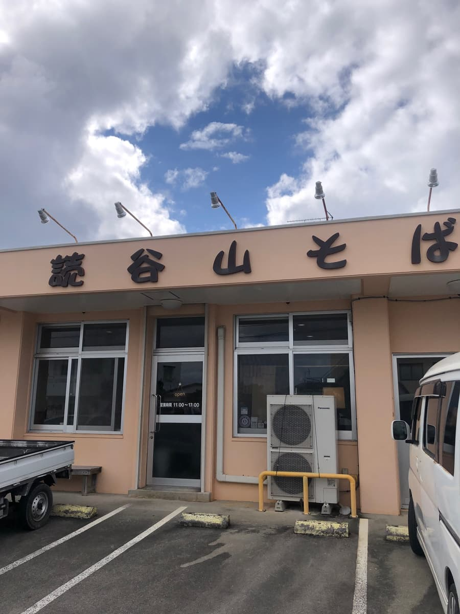
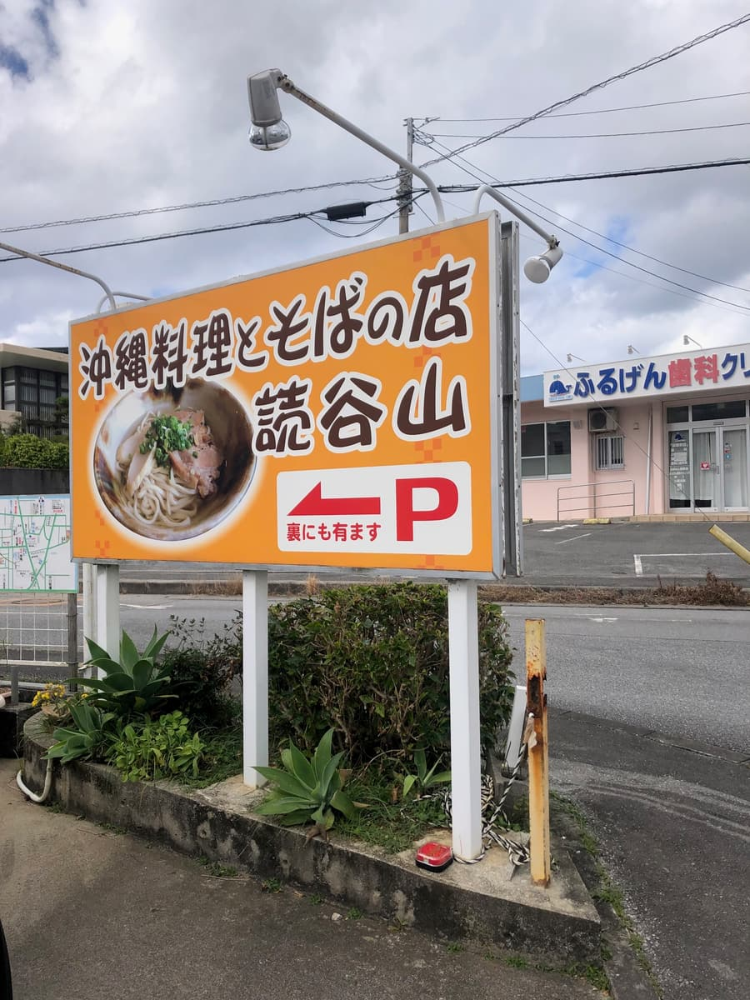
光看外观有点朴素，但走进去却是比想像中更舒适的空间呢。是一间当地客人川流不息、很有那种氛围的冲绳面店。真正好吃的冲绳面，就是这种店才端得出来啊。
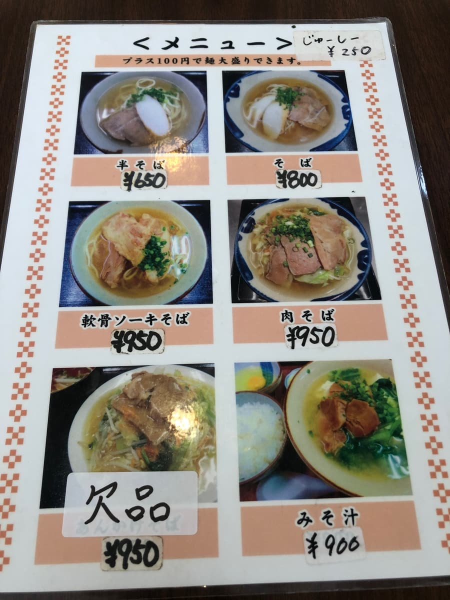
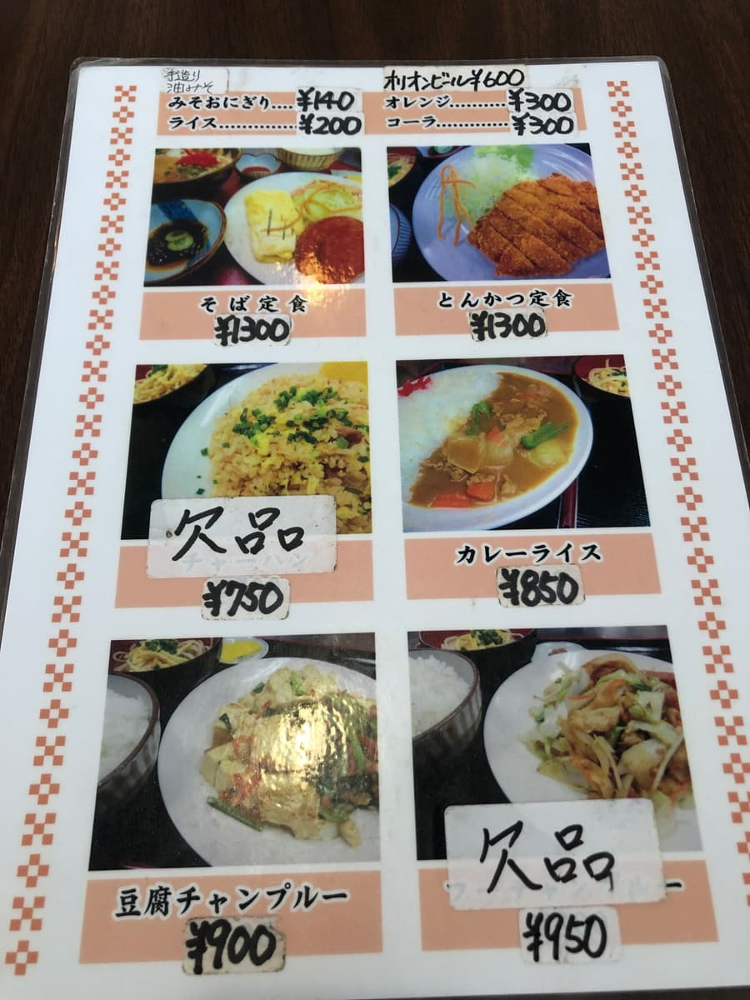
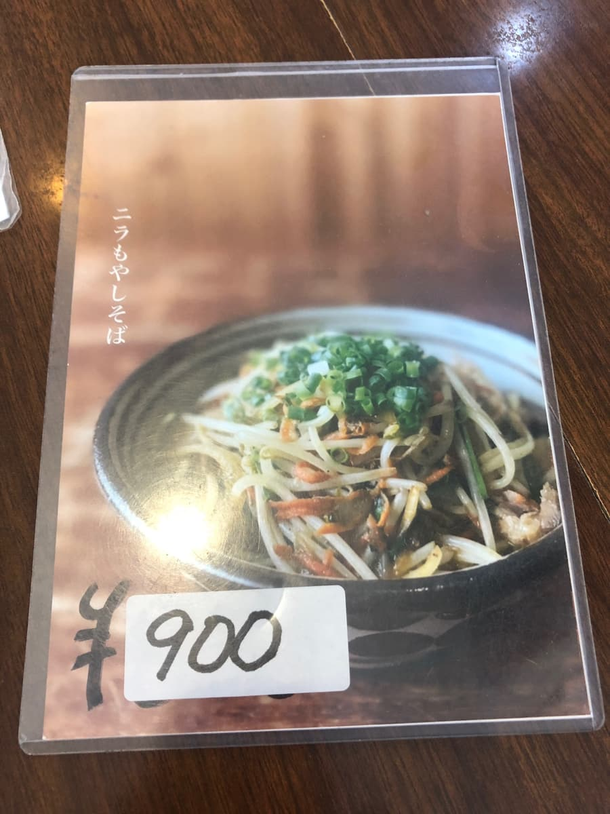
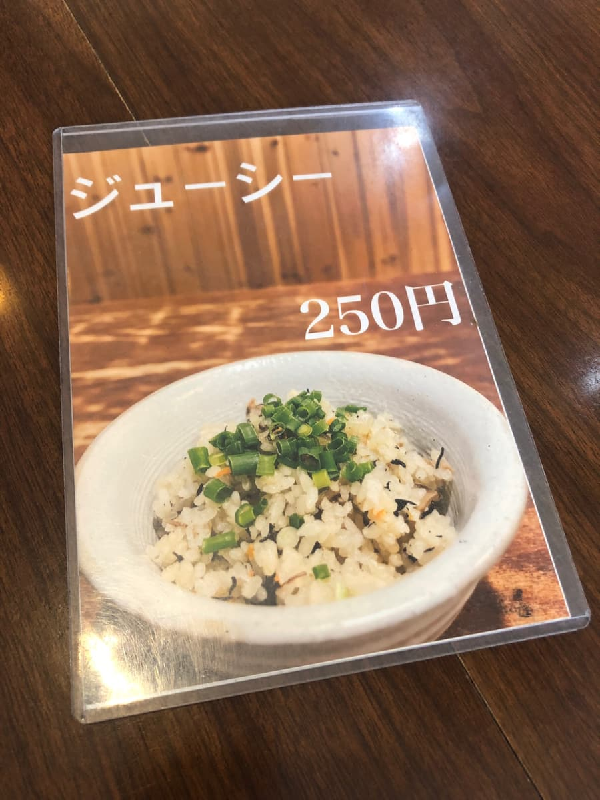
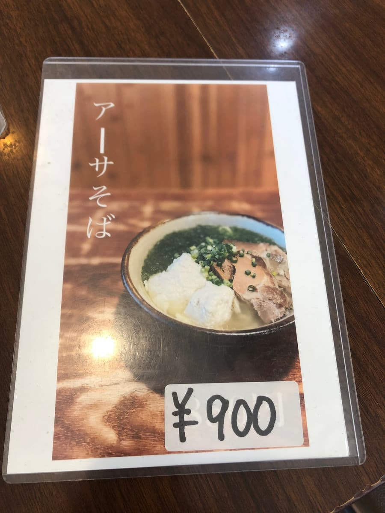
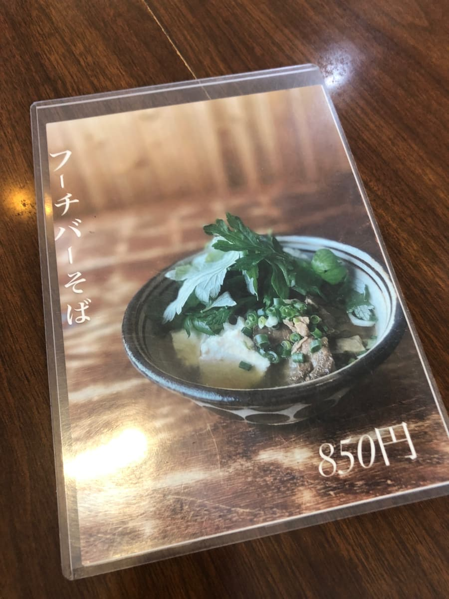
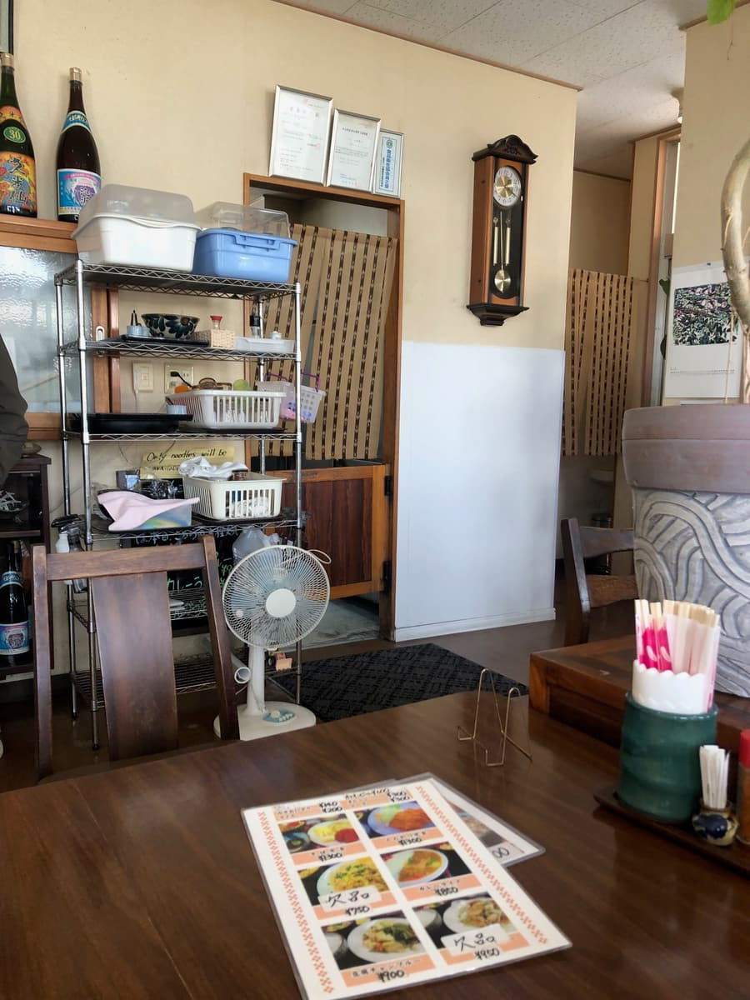
这次点的是「软骨排骨面」。看菜单，从半碗面、肉面、软骨排骨面到石莼面、艾草面等，种类相当丰富呢。加100日圆还可以加大面量，对食量大的人来说是很开心的一点。😋
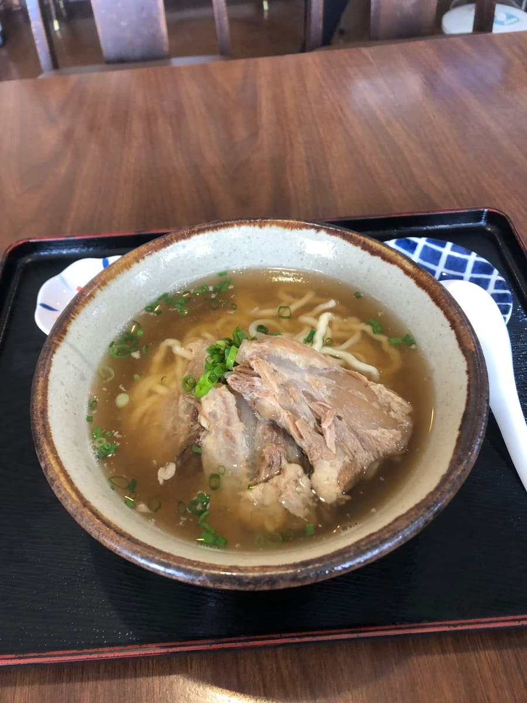
先喝一口汤。柴鱼高汤的味道很扎实，深奥的滋味在口中扩散开来。完全不会太浓，反而是很高雅的做法，能感受到食材的优质。这种汤让人想一口气喝光喔。
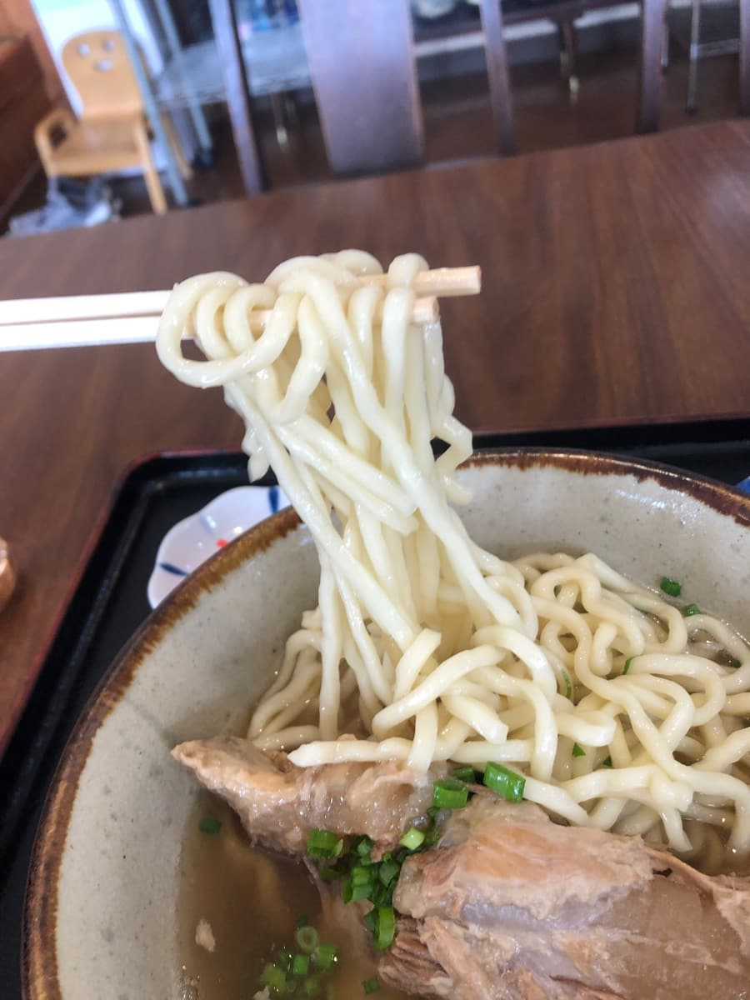
面条是中粗的卷面。看起来好像很软，但吃一口与汤汁的结合度超棒。嚼劲和柔软度的平衡恰到好处，吸面时的口感让人欲罢不能。吸饱汤汁的部分，以及中心稍微保有嚼劲的部分，可以同时享受到两者的好。✨
然后说到底最重要的还是「软骨排骨」。说到排骨，大家往往印象中是带骨的猪肉，不过这里的排骨是清爽系的做法。虽然确实有一点筋感（口感偏韧），但几乎都很软嫩。
汤、面、配料，所有要素都平衡得很漂亮，是让人再次觉得「啊，这就是冲绳面啊」的一碗。加上和建筑外观之间的落差，我懂了为什么当地人会常常光顾。就是普通地好吃，不需要更多了。🌟
价格也很实惠，能吃到这种水准的面，来读谷村时一定要顺道造访。真的可以推荐给喜欢冲绳面的人。
评分（12分/15分）：这家店也让我觉得是面、汤、配料取得平衡、水准很高的冲绳面店。来读谷村的时候，要不要来试试看呢？推荐喔😄
面：★★★★☆（4）
汤头：★★★★☆（4）
配料：★★★★☆（4）